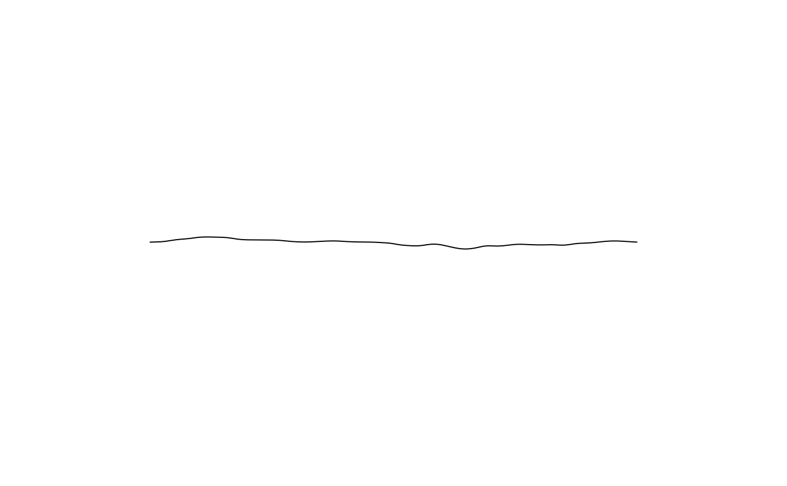
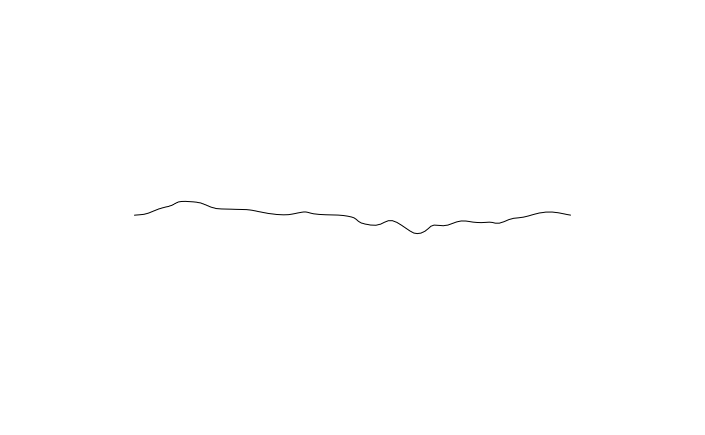
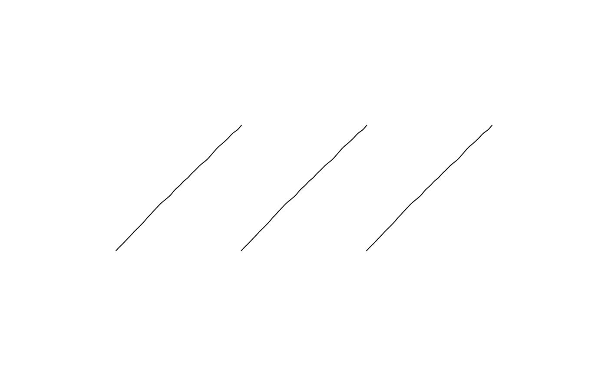
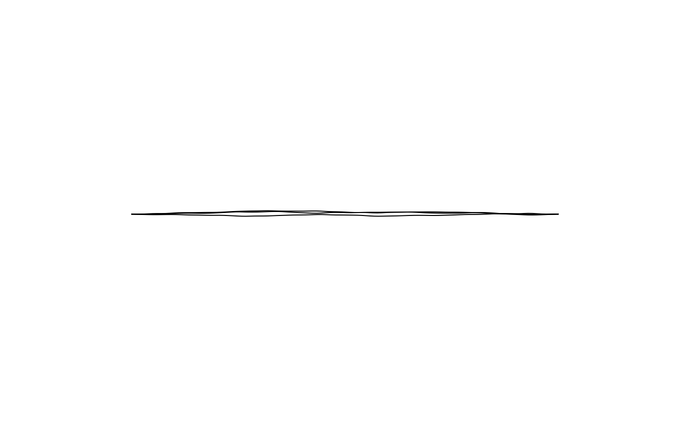

curve_twist is shape_twist()'s path alone, with no ribbon width:
an open curve_line()-like polyline between (x, y) and
(xend, yend), displaced away from a straight line by a
noise_bridge, giving a wandering, twisted appearance. Where
shape_twist() also modulates a filled ribbon's width along this same
kind of path (via a separate distortion noise_field), curve_twist()
has no width or fill at all – just the displaced backbone itself,
rendered as an open grid::polylineGrob() (geometry = "path").
Shares its path computation with shape_twist() via the internal
twisted_path_points() helper (R/shape_twist.R) rather than
duplicating it.
curve_twists() is a vectorized version of curve_twist(): each
argument may be a vector, recycled against the others via
purrr::pmap()'s own vctrs-based rules (any length-1 element is
broadcast to the common length; mismatched lengths greater than 1
raise an error). A shared path_distortion noise_bridge is
automatically recycled across every path; pass a list() of several
different noise_bridges instead to vary it per path. The result is
a sketch containing one curve_twist() per recycled row, rather
than a single drawable.
Usage
curve_twist(
x = 0,
y = 0,
xend = 1,
yend = 1,
scale = 0.2,
n = 100L,
path_distortion = noise_bridge(),
trans = trans_identity(),
...
)
curve_twists(
x = 0,
y = 0,
xend = 1,
yend = 1,
scale = 0.2,
n = 100L,
path_distortion = noise_bridge(),
trans = trans_identity(),
...
)Arguments
- x, y
Start point. Default
0.- xend, yend
End point. Default
1.- scale
Amplitude of the Brownian-bridge displacement (internally scaled by
0.1, matchingshape_twist()'s own scaling of its path). Must be non-negative. Default0.2.- n
Number of points used along the path. Default
100L.- path_distortion
A noise_bridge controlling the path's Brownian bridge. Default
noise_bridge().- trans
A trans object applied to the curve's computed points. Default
trans_identity()(no transform).- ...
Arguments passed to
style().
Details
style@fill has no effect for curve_twist() – see drawable's
geometry documentation for why "path" geometries have no interior
to fill. Passing fill via ... is still accepted (it's simply
ignored at draw time), since style() is shared across every
geometry.
See also
Other 1D curves:
curve_arc(),
curve_bezier(),
curve_line(),
curve_raw(),
curve_scribble(),
curve_spiral()
Examples
draw(curve_twist(
x = 0, y = 0, xend = 1, yend = 0,
path_distortion = noise_bridge(seed = 7734L)
))

# a larger scale wanders further from the straight line between the
# endpoints
draw(curve_twist(
x = 0, y = 0, xend = 1, yend = 0, scale = 0.6,
path_distortion = noise_bridge(seed = 7734L)
))

# curve_twist() is shape_twist()'s backbone alone, with no ribbon width
draw(shape_twist(x = 0, y = 0, xend = 1, yend = 0, path_distortion = noise_bridge(seed = 7734L)))
draw(curve_twists(x = 1:3, y = 0, xend = 2:4, yend = 1))

# a bundle of independently-wandering strands between the same endpoints
draw(curve_twists(
x = 0, y = 0, xend = 3, yend = 0,
path_distortion = list(noise_bridge(seed = 1L), noise_bridge(seed = 2L), noise_bridge(seed = 3L))
))
